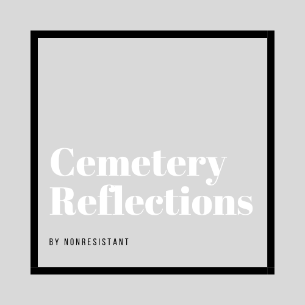

Cemetery Reflections
Reflections at a Cemetery. Reflections to inspire people to live life to the fullest. A SunShining podcast by Nonresistant. Hi, my name is Nonresistant, last summer I visited the cemetery every weekend to record another "Cemetery Relection". It is now going on the third year since I got the orgional idea for Cemetery Reflections. And now this year 2020 I am bringing it to a new level. You can find my Cemetery Relection podcast everywhere you listen to podcasts and on youtube! https://anchor.fm/Cemetery-Reflections